Convolutional Neural Networks
Comprendre pourquoi les réseaux denses sont inadaptés aux images, maîtriser l'architecture des CNN (convolution, kernel, stride, padding, pooling) et savoir utiliser le Transfer Learning avec des modèles pré-entraînés en Keras.
- Cheatsheet — Convolutional Neural Networks
- ️ Récapitulatif — Erreurs clés à éviter
- 0) Rappels — Dense Neural Networks
- 1) Applications du Deep Learning sur les images
- 2) Preprocessing des images
- 3) Architecture d'un CNN
- 4) Hyperparamètres de convolution
- 5) Cas réel : reconnaissance de chiffres (MNIST)
- 6) Architectures classiques & Transfer Learning
- 7) Bonus : Google Colab
- Bibliographie
- Challenges
📋 Cheatsheet — Convolutional Neural Networks
Preprocessing d'images
## Normalisation des pixels (0-255 → 0-1)
X_train = X_train / 255. # division simple
## ou via une couche Keras intégrée :
layers.Rescaling(scale=1./255.) # normalisation dans le modèle
## Resize recommandé : (224, 224, 3) pour les modèles SOTA
## Charger un dataset d'images depuis un dossier
from tensorflow.keras.utils import image_dataset_from_directory
ds = image_dataset_from_directory('path/to/data/', # charge images par batch
image_size=(224, 224),
batch_size=32)Architecture CNN de base
from tensorflow.keras import Sequential, Input, layers
model = Sequential()
model.add(Input(shape=(224, 224, 3))) # image couleur 224×224
## Bloc convolution + pooling (répéter 2-3 fois)
model.add(layers.Conv2D(32, (3, 3), activation='relu', padding='same')) # 32 filtres, kernel 3×3
model.add(layers.MaxPool2D(pool_size=(2, 2))) # réduit la taille par 2
model.add(layers.Conv2D(64, (3, 3), activation='relu', padding='same')) # plus de filtres
model.add(layers.MaxPool2D(pool_size=(2, 2)))
## Partie dense (classification)
model.add(layers.Flatten()) # 3D → 1D
model.add(layers.Dense(50, activation='relu')) # couche cachée
model.add(layers.Dropout(0.3)) # régularisation
model.add(layers.Dense(10, activation='softmax')) # 10 classesCouche Conv2D — paramètres clés
layers.Conv2D(
filters=32, # nombre de filtres (= profondeur de la sortie)
kernel_size=(3, 3), # taille du kernel (3 ↔ (3,3))
strides=(1, 1), # pas de déplacement du kernel (défaut=1)
padding='same', # 'valid' (pas de padding) ou 'same' (conserve la taille)
activation='relu' # activation appliquée après la convolution
)Couches de Pooling
layers.MaxPool2D(pool_size=(2, 2)) # garde le max → réduit taille par 2
layers.AveragePooling2D(pool_size=(2, 2)) # garde la moyenne → réduit taille par 2
## Le pooling n'a AUCUN paramètre entraînableCompter les paramètres d'une Conv2D
## Paramètres = nb_filtres × (nb_channels_input × kernel_h × kernel_w) + nb_filtres (biais)
## Exemple : Conv2D(6, (3,3)) sur image RGB (3 channels)
## → 6 × (3 × 3 × 3) + 6 = 168 paramètres
## ⚠️ Le nombre de paramètres ne dépend PAS de la taille de l'image !Compile & Fit (rappel)
## Classification multi-classes (y one-hot encoded)
model.compile(loss='categorical_crossentropy', optimizer='adam', metrics=['accuracy'])
## Classification multi-classes (y en entiers)
model.compile(loss='sparse_categorical_crossentropy', optimizer='adam', metrics=['accuracy'])
## One-hot encoding du target
from tensorflow.keras.utils import to_categorical
y_cat = to_categorical(y, num_classes=10) # shape (n, 10)
## Fit avec early stopping
from tensorflow.keras.callbacks import EarlyStopping
es = EarlyStopping(patience=30, restore_best_weights=True)
model.fit(X_train, y_train, batch_size=32, epochs=100, validation_split=0.3, callbacks=[es])Transfer Learning
from tensorflow.keras.applications import VGG16
## Charger le modèle pré-entraîné SANS les couches denses
base_model = VGG16(weights='imagenet', # poids pré-entraînés sur ImageNet
include_top=False, # exclut les couches Dense
input_shape=(224, 224, 3))
base_model.trainable = False # 🧊 geler les poids convolutionnels
## Construire le modèle complet
model = Sequential([
base_model, # couches conv pré-entraînées
layers.Flatten(),
layers.Dense(50, activation='relu'), # nouvelles couches Dense
layers.Dense(10, activation='softmax') # adaptées à notre tâche
])Inspecter les activations d'une couche
layer_1 = model.layers[0] # récupère la 1ère couche
activation = layer_1(X_train[0:10]) # calcule la sortie pour 10 images
## activation.shape → (10, H, W, nb_filtres)
plt.imshow(activation[0, :, :, 0], cmap='gray') # affiche le 1er feature map⚠️ Récapitulatif — Erreurs clés à éviter
Utiliser un réseau Dense (Flatten) directement sur des images
❌ Flatten une image 225×225×3 → 151 875 features → explosion du nombre de paramètres + perte de l'information spatiale
python
model.add(layers.Flatten()) # 151 875 inputs
model.add(layers.Dense(100, activation='relu')) # 15M+ paramètres !
✅ Utiliser des couches Conv2D + MaxPool2D qui exploitent la structure spatiale avec beaucoup moins de paramètres
python
model.add(layers.Conv2D(16, (3, 3), activation='relu')) # ~450 paramètres
model.add(layers.MaxPool2D((2, 2)))
Oublier de normaliser les pixels (0-255)
❌ Passer des valeurs brutes 0-255 au réseau → convergence lente ou échec
python
model.fit(X_train_raw, y_train) # pixels entre 0 et 255
✅ Normaliser les pixels entre 0 et 1 (ou -1 et 1)
python
X_train = X_train / 255. # normalisation simple
# ou intégrer layers.Rescaling(1./255.) dans l'architecture
Oublier le Flatten entre les couches Conv2D et Dense
❌ Passer directement d'une sortie 3D (Conv2D) à une couche Dense → erreur de dimensions
python
model.add(layers.Conv2D(16, (3,3), activation='relu'))
model.add(layers.Dense(10, activation='softmax')) # ❌ Dense attend du 1D !
✅ Toujours ajouter Flatten() entre la partie convolutionnelle et la partie dense
python
model.add(layers.Conv2D(16, (3,3), activation='relu'))
model.add(layers.Flatten()) # 3D → 1D
model.add(layers.Dense(10, activation='softmax'))
Utiliser des kernels trop grands ou trop petits pour la taille de l'image
❌ Kernel (2,2) sur une image 1200×800 → ne voit rien de pertinent. Kernel (64,64) sur 128×128 → trop gros
python
layers.Conv2D(32, (64, 64)) # kernel disproportionné pour une image 128×128
✅ Kernels (3,3) ou (5,5) pour des images ~224×224, avec des kernels qui diminuent dans les couches profondes
python
layers.Conv2D(32, (5, 5)) # 1ères couches : gros kernels, peu de filtres
layers.Conv2D(128, (3, 3)) # dernières couches : petits kernels, plus de filtres
Entraîner un CNN from scratch quand on a peu de données
❌ Construire une architecture de zéro avec 500 images → overfit massif
python
model = Sequential() # CNN custom avec 500 images → pas assez de données
✅ Utiliser le Transfer Learning : charger un modèle pré-entraîné (VGG16, ResNet50), geler les couches conv, et n'entraîner que les couches Dense
python
base = VGG16(weights='imagenet', include_top=False, input_shape=(224,224,3))
base.trainable = False # geler → seules les couches Dense sont entraînées
0) Rappels — Dense Neural Networks
Un réseau Dense classique en Keras suit 3 étapes : Architecture → Compile → Fit.
from tensorflow.keras import Sequential, Input, layers, optimizers, callbacks
## 1. Architecture
model = Sequential()
model.add(Input(shape=(10,)))
model.add(layers.Dense(50, activation='relu'))
model.add(layers.Dense(25, activation='relu'))
model.add(layers.Dense(4, activation='softmax'))
## 2. Compilation
opt = optimizers.Adam(learning_rate=0.01)
model.compile(loss='categorical_crossentropy', optimizer=opt, metrics=['accuracy'])
## 3. Fit
es = callbacks.EarlyStopping(patience=30, restore_best_weights=True)
model.fit(X, y, batch_size=16, epochs=100, validation_split=0.3, callbacks=[es])Mais que se passe-t-il si l'input n'est pas un vecteur mais une image ?
1) Applications du Deep Learning sur les images
Les CNN sont à la base de nombreuses applications en Computer Vision :
- Object Detection — détection d'objets dans des scènes (voitures autonomes)
- Facial Recognition — détection + identification de visages
- Image Segmentation — segmentation pixel par pixel (imagerie médicale)
- Captioning — génération de texte décrivant une image
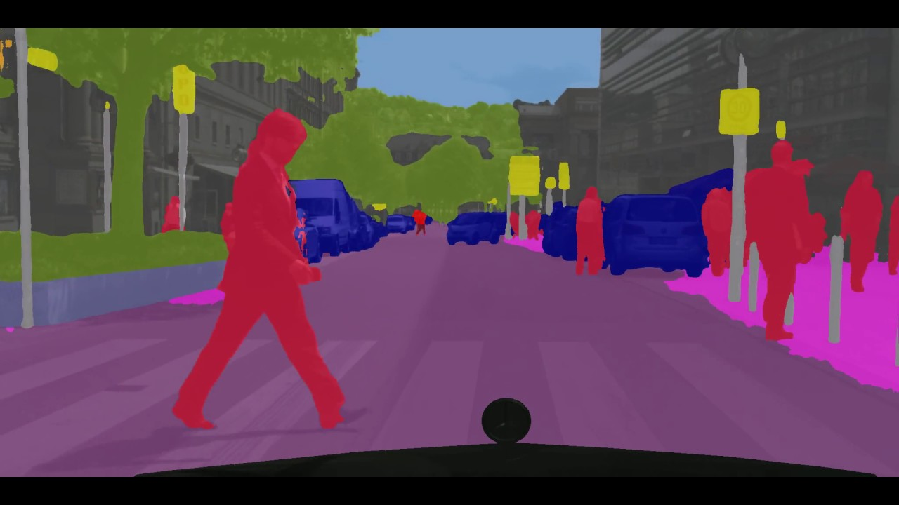
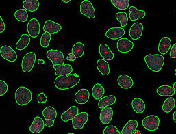
2) Preprocessing des images
2.1 Représentation d'une image
- Noir & blanc : matrice de taille
(height, width), valeurs 0-255 - Couleur (RGB) : tenseur de taille
(height, width, 3)— un canal par couleur (Rouge, Vert, Bleu)
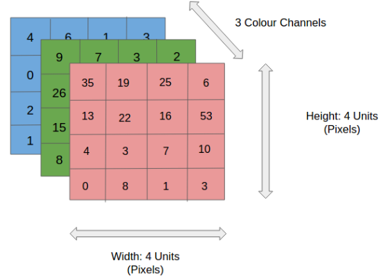
Convention : en maths, un tableau 2D = matrice, un tableau 3D+ = tenseur. En code (NumPy/TF), tout est un array ou tensor.
2.2 Preprocessing
Resizing — Toutes les images doivent avoir la même taille.
Les modèles SOTA sont entraînés sur des images (224, 224, 3). Il est rarement utile d'utiliser des résolutions supérieures à 256 pixels.
Normalisation des intensités — Les pixels vont de 0 à 255. Diviser par 255 pour obtenir des valeurs entre 0 et 1 :
X_train = X_train / 255. # normalisation manuelle
## ou
layers.Rescaling(scale=1./255.) # couche Keras intégréeData Augmentation — Créer des données supplémentaires en transformant les images existantes (le label ne change pas) : mirror (retournement), crop (recadrage), rotations, blur, changement de couleurs, déformations…
Data Loader — Les images ne tiennent pas en mémoire → les charger à la volée (on the fly) :
from tensorflow.keras.utils import image_dataset_from_directory
ds = image_dataset_from_directory('path/', image_size=(224, 224), batch_size=32)3) Architecture d'un CNN
3.1 Pourquoi les réseaux Dense sont inadaptés aux images ?
Raison 1 — Trop de paramètres
Flatten une image 225×225×3 = 151 875 features. Une seule couche Dense(100) génère 15 millions de paramètres !
model = Sequential()
model.add(Input(shape=(225, 225, 3)))
model.add(layers.Reshape((225*225*3,))) # flatten = 151 875
model.add(layers.Dense(100, activation='relu')) # 15 187 600 paramètres !Raison 2 — Pas d'invariance par translation
Si un carré rouge se déplace dans l'image, le vecteur flatté change complètement → le réseau Dense ne reconnaît plus le même objet.
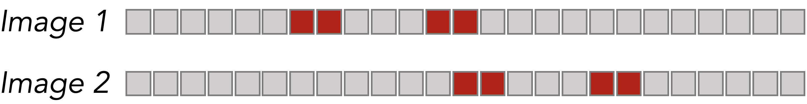
La convolution résout ces deux problèmes : elle partage les poids (moins de paramètres) et détecte les mêmes motifs quelle que soit leur position dans l'image.
3.2 La convolution
Une convolution = un kernel (petite matrice de poids) qui glisse sur l'image et effectue un produit élément par élément à chaque position.
Étape 1 — Produit élément par élément (≠ produit matriciel) :
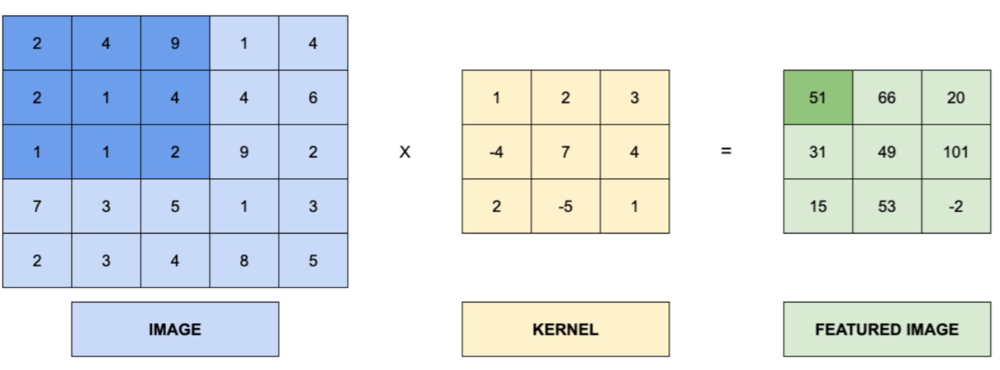
Étape 2 — Le kernel glisse sur toute l'image :
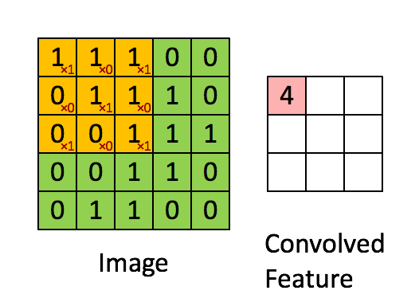
Que font les kernels ?
Chaque kernel extrait une feature spécifique de l'image (contours, textures, dégradés…) :
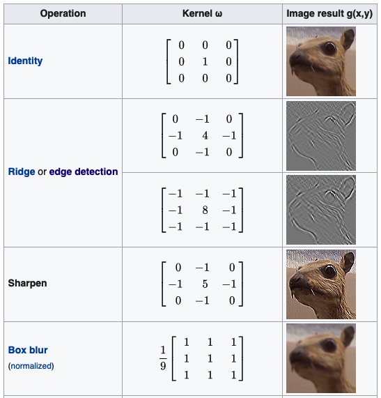
Images couleur (3 channels)
Pour une image RGB, un filtre est composé de 3 kernels (un par canal). Les résultats sont sommés + un biais :
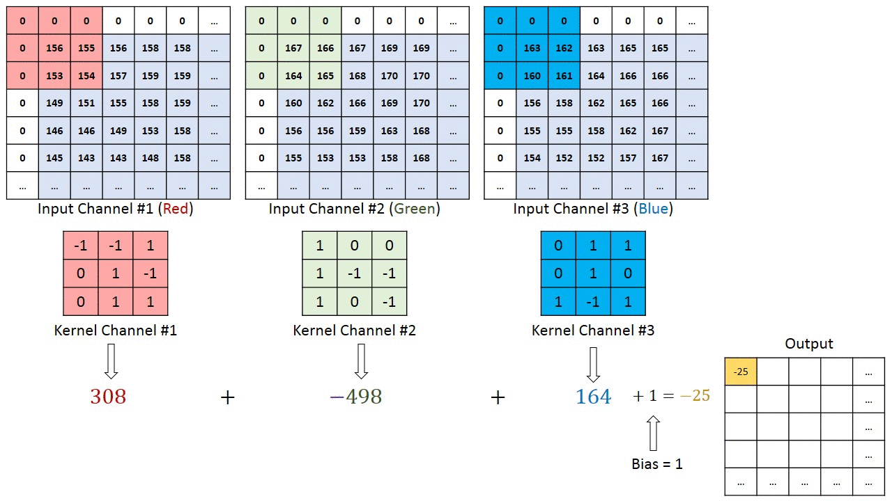
| Terme | Définition | Kernel | Petite matrice de poids (ex: 3×3) appliquée à un channel |
|---|---|---|---|
| Filtre | Ensemble de kernels (1 par channel d'entrée) + 1 biais | Couche Conv2D | Plusieurs filtres appliqués en parallèle sur le même input |
Une couche convolutionnelle
Appliquer N filtres sur le même input → la sortie a une profondeur de N.
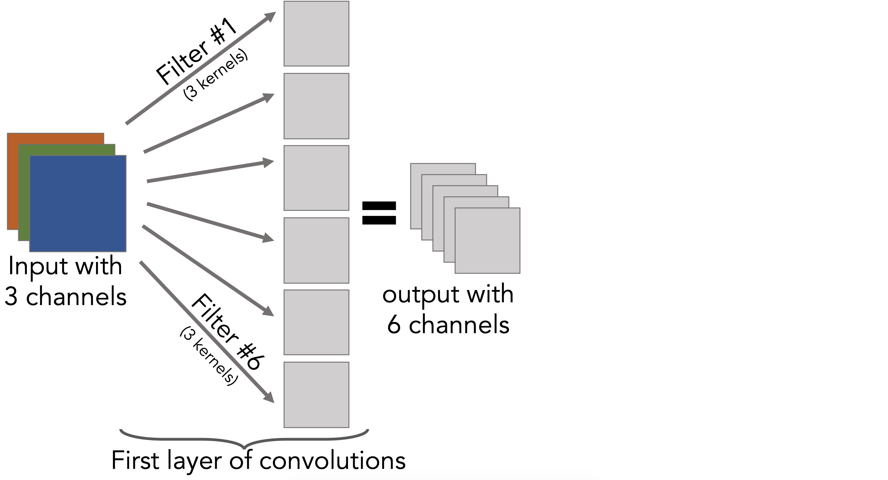
Couches chaînées → CNN
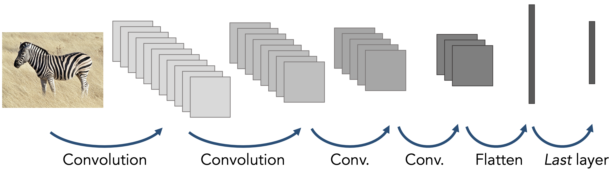
Le Flatten ne se fait qu'à la toute fin, avant les couches Dense.
Poids des kernels
Les poids des kernels sont initialisés aléatoirement puis appris pendant model.fit() via backpropagation — exactement comme les poids des couches Dense.
Compter les paramètres
$\text{Params d'un filtre} = \text{nb\_channels} \times k_h \times k_w + 1 \text{ (biais)}$
$\text{Params d'une couche Conv2D} = \text{nb\_filtres} \times (\text{nb\_channels} \times k_h \times k_w + 1)$
Le nombre de paramètres d'un CNN ne dépend PAS de la taille de l'image — contrairement aux réseaux Dense. C'est un avantage majeur.
3.3 Syntaxe Keras
model = Sequential()
model.add(Input(shape=(225, 225, 3)))
model.add(layers.Conv2D(6, kernel_size=(3, 3), activation='relu')) # 6 filtres 3×3 → 168 params
model.add(layers.Conv2D(4, kernel_size=3, activation='relu')) # kernel_size=3 ↔ (3,3) → 220 params
model.add(layers.Flatten()) # aplatir avant Dense
model.add(layers.Dense(1, activation='sigmoid')) # sortie binaire3.4 Intuitions sur les kernels appris
Après entraînement, les filtres se spécialisent automatiquement : certains détectent des rayures, d'autres des taches de couleur, des contours, etc.

En Deep Learning, l'extraction de features est faite directement par le modèle — pas besoin de les concevoir manuellement. L'extraction est optimisée pour la tâche.
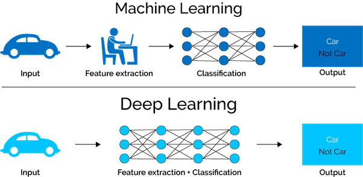
4) Hyperparamètres de convolution
4.1 Strides
Le stride contrôle le pas de déplacement du kernel sur l'image. Un stride de 2 réduit la taille de sortie par 2.
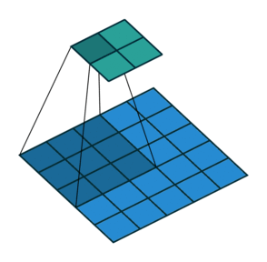
layers.Conv2D(16, (2, 2), strides=(1, 1)) # stride=1 (défaut) → sortie ≈ même taille
layers.Conv2D(16, (2, 2), strides=(2, 2)) # stride=2 → sortie ≈ taille / 24.2 Padding
Le padding ajoute des pixels vides (=0) autour de l'image pour contrôler la taille de sortie.
layers.Conv2D(16, (2, 2), padding='valid') # pas de padding → sortie plus petite (défaut)
layers.Conv2D(16, (2, 2), padding='same') # padding → sortie = même taille que l'input4.3 Pooling
Le pooling réduit la taille de la sortie d'une convolution — zéro paramètre entraînable.
MaxPool2D — garde la valeur maximale :

AveragePooling2D — garde la moyenne :
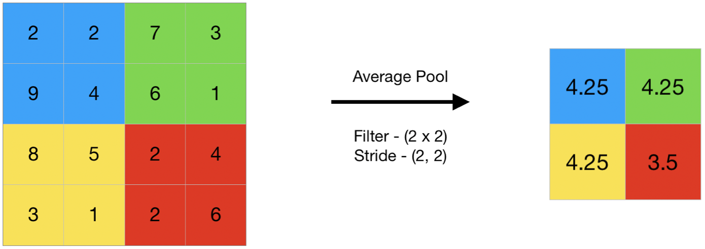
Bonne pratique : ajouter un MaxPool2D après chaque Conv2D.
model = Sequential()
model.add(Input(shape=(225, 225, 3)))
model.add(layers.Conv2D(16, (2, 2), activation='relu'))
model.add(layers.MaxPool2D(pool_size=(2, 2))) # 224→112
model.add(layers.Conv2D(16, (2, 2), activation='relu'))
model.add(layers.MaxPool2D(pool_size=(2, 2))) # 111→55
model.add(layers.Flatten())
model.add(layers.Dense(6, activation='relu'))
model.add(layers.Dense(1, activation='sigmoid'))
## Total : ~291K params vs ~2.4M params pour un Dense équivalentRésumé des hyperparamètres
| Composant | Rôle | Choix courant | Filtres | Nombre de features extraites | 32, 64, 128… (croissant) |
|---|---|---|---|---|---|
| Kernel size | Taille du champ de vision | (3,3) ou (5,5) pour images 224×224 | Strides | Pas de déplacement | (1,1) par défaut |
| Padding | Conservation de la taille | 'same' ou 'valid' | Pooling | Réduction de taille | MaxPool2D(2,2) après chaque Conv2D |
5) Cas réel : reconnaissance de chiffres (MNIST)
5.1 Charger et préparer les données
from tensorflow.keras.datasets import mnist
(X_train, y_train), (X_test, y_test) = mnist.load_data() # images 28×28 noir & blanc
X_train = X_train / 255. # normaliser
X_train = X_train.reshape(-1, 28, 28, 1) # ajouter le channel (28,28) → (28,28,1)
from tensorflow.keras.utils import to_categorical
y_cat_train = to_categorical(y_train, num_classes=10) # one-hot encoding5.2 Modèle CNN
model = Sequential()
model.add(Input(shape=(28, 28, 1)))
model.add(layers.Conv2D(16, (3, 3), padding='same', activation='relu')) # 1ère conv
model.add(layers.MaxPool2D(pool_size=(2, 2))) # 28→14
model.add(layers.Conv2D(32, (2, 2), padding='same', activation='relu')) # 2ème conv (+ filtres)
model.add(layers.MaxPool2D(pool_size=(2, 2))) # 14→7
model.add(layers.Flatten()) # 7×7×32 = 1568
model.add(layers.Dense(50, activation='relu'))
model.add(layers.Dense(10, activation='softmax')) # 10 classes
model.compile(loss='categorical_crossentropy', optimizer='adam', metrics=['accuracy'])
model.fit(X_train, y_cat_train, epochs=1, batch_size=32)## Output
## accuracy: ~0.98 sur le test set après 1 epoch seulementPattern courant : au fil des couches, le kernel size diminue et le nombre de filtres augmente.
5.3 Version avec preprocessing intégré
model_pipe = Sequential([
Input(shape=(28, 28, 1)),
layers.Rescaling(scale=1./255.), # normalisation intégrée
layers.Conv2D(16, (3, 3), padding='same', activation='relu'),
layers.MaxPool2D(pool_size=(2, 2)),
layers.Conv2D(32, (2, 2), padding='same', activation='relu'),
layers.MaxPool2D(pool_size=(2, 2)),
layers.Flatten(),
layers.Dense(50, activation='relu'),
layers.Dropout(0.3), # régularisation
layers.Dense(10, activation='softmax')
])
model_pipe.compile(loss='sparse_categorical_crossentropy', # pas besoin de one-hot encoding
optimizer='adam', metrics=['accuracy'])
model_pipe.fit(X_train_raw, y_train_raw, epochs=1, batch_size=32)5.4 Inspecter les activations
layer_1 = model.layers[0] # 1ère couche Conv2D
activation = layer_1(X_train[0:10]) # sortie pour 10 images
## Afficher les 16 feature maps de la 1ère image
fig, axs = plt.subplots(4, 4, figsize=(15, 6))
for i in range(16):
axs[i//4, i%4].imshow(activation[0, :, :, i], cmap='gray')Au fur et à mesure des couches, les images deviennent plus petites et plus abstraites → on les appelle activation maps. 👉 TensorSpace — LeNet Playground | 👉 CNN Explainer
6) Architectures classiques & Transfer Learning
6.1 Architectures SOTA
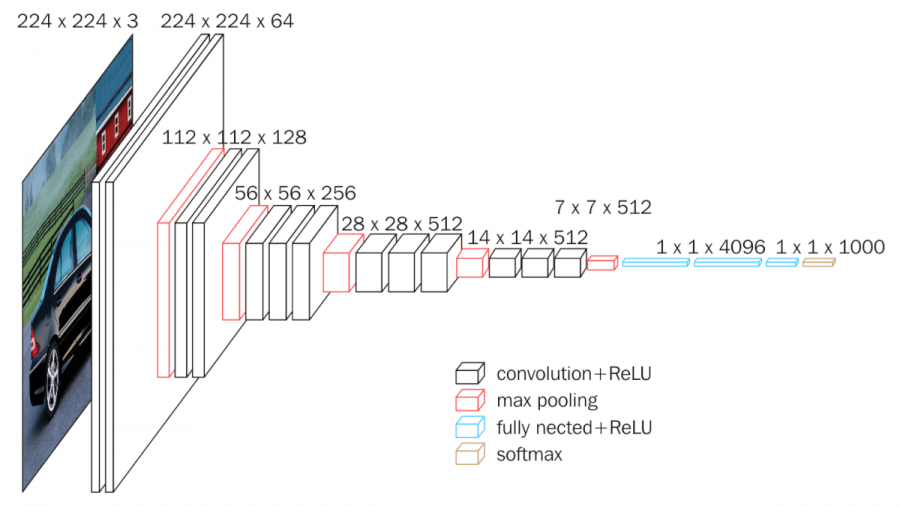
Des architectures comme AlexNet, VGG-16, ResNet50 ont été entraînées sur des millions d'images (ImageNet).
6.2 Transfer Learning
L'idée : réutiliser les couches convolutionnelles pré-entraînées (qui savent déjà détecter contours, formes, textures) et ne ré-entraîner que les couches Dense adaptées à notre tâche.
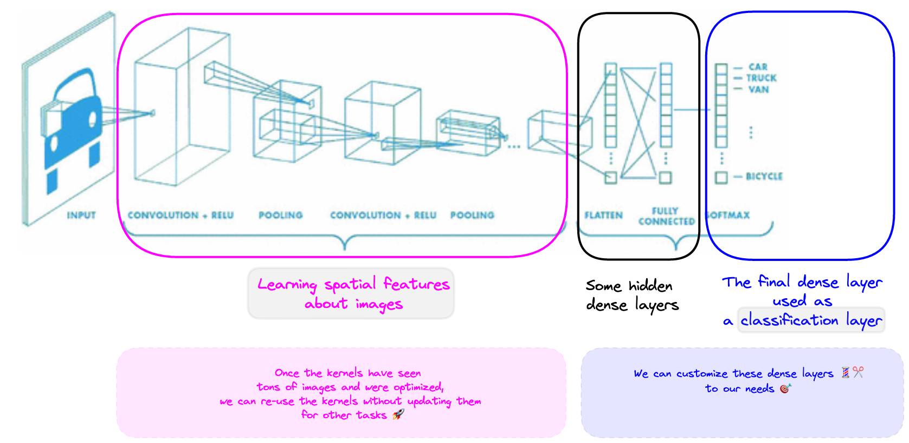
Le processus :
- Charger un modèle pré-entraîné sans les couches Dense (
include_top=False) - Geler les poids convolutionnels (
trainable = False) - Ajouter de nouvelles couches Dense adaptées à notre tâche
- Entraîner uniquement les couches Dense
from tensorflow.keras.applications import VGG16
base_model = VGG16(weights='imagenet', include_top=False, input_shape=(224, 224, 3))
base_model.trainable = False # 🧊 geler les couches conv
model = Sequential([
base_model,
layers.Flatten(),
layers.Dense(50, activation='relu'),
layers.Dense(10, activation='softmax')
])6.3 Modèles pré-entraînés disponibles
👉 VGG16 | 👉 VGG19 | 👉 ResNet50 | 👉 Liste complète — tf.keras.applications
6.4 Stratégie de construction d'un CNN
"Faire ouvrir les yeux au réseau progressivement" :
- 1ères couches → gros kernels (5,5), peu de filtres (32, 64) → capturent les features spatiales générales
- Dernières couches → petits kernels (3,3), plus de filtres (128, 256) → capturent les détails fins
7) Bonus : Google Colab
Google Colab permet d'entraîner des modèles DL gratuitement avec un GPU.
- Charger des notebooks locaux
- Monter Google Drive
- Activer le runtime GPU (Runtime > Change runtime type > GPU)
- Utilisation gratuite ~10h en continu
Bibliographie
- 👉 Stanford — CS230 CNN Cheat Sheets (Shervine)
- 👉 Stanford — CS 231 (15h sur Youtube)
- 👉 3Blue1Brown — Convolutions (vidéo)
- 👉 10 CNN Architectures — Illustrated
- 👉 TensorSpace — LeNet Playground
- 👉 CNN Explainer
Challenges
Construire des CNN sur MNIST et d'autres datasets d'images, expérimenter avec les hyperparamètres (kernels, filtres, pooling, padding), et appliquer le Transfer Learning avec VGG16.
- 🧭 Introduction
- 1. Pourquoi les réseaux Dense échouent sur les images
- 2. Représentation d'une image et preprocessing
- 3. La convolution expliquée pas à pas
- 4. Les hyperparamètres de la convolution
- 5. Architecture complète d'un CNN
- 6. Exemple complet : reconnaissance de chiffres (MNIST)
- 7. Transfer Learning — réutiliser un CNN géant
- 8. Erreurs classiques à éviter
- 🎯 Questions de vérification
- 📌 TL;DR
🧭 Introduction
Quand on parle d'intelligence artificielle qui "voit" des images — reconnaître un chat, détecter une tumeur sur une radio, lire un panneau de signalisation — on utilise presque toujours des Convolutional Neural Networks (CNN, ou réseaux de neurones convolutionnels).
Mais pourquoi ne pas simplement utiliser un réseau de neurones classique sur une image ? Parce que cela ne fonctionne pas bien : trop de paramètres, trop peu de sens de la structure spatiale. Les CNN ont été inventés précisément pour résoudre ce problème.
L'analogie fil rouge de ce cours : imagine une loupe qui se déplace lentement sur une photo, case par case. À chaque position, elle regarde un petit carré de pixels et note ce qu'elle y voit (un contour ? une tache de couleur ? une courbe ?). C'est exactement ce que fait un filtre de convolution. Ce mécanisme est le coeur des CNN.
A retenir avant de commencer
- Une image est un tableau de chiffres (pixels). Une image couleur = 3 tableaux empilés (rouge, vert, bleu).
- Un réseau Dense classique "écrase" l'image en liste → il perd l'information spatiale et génère des millions de paramètres inutiles.
- La convolution = une petite matrice de poids (le "kernel") qui glisse sur l'image et extrait des motifs locaux.
- Le pooling = une opération qui réduit la taille de l'image après chaque convolution (sans paramètres à apprendre).
- Le Transfer Learning = réutiliser un CNN déjà entraîné sur des millions d'images pour votre propre tâche.
Mini-plan du cours
- Pourquoi les réseaux Dense ne fonctionnent pas sur les images
- Représentation d'une image en chiffres + preprocessing
- La convolution expliquée pas à pas
- Les hyperparamètres (stride, padding, pooling)
- Construire un CNN complet en Keras (exemple MNIST)
- Transfer Learning avec VGG16
1. Pourquoi les réseaux Dense échouent sur les images
Le problème du nombre de paramètres
Un réseau Dense classique attend un vecteur 1D en entrée. Pour lui donner une image, il faut d'abord l'aplatir (Flatten) : transformer le tableau 2D ou 3D en une longue liste de chiffres.
Exemple concret : une image couleur de taille $224 \times 224$ pixels avec 3 canaux (RGB).
Si on connecte ces 150 528 features à une première couche de 100 neurones :
...pour une seule couche ! C'est énorme, long à entraîner, et facile à sur-apprendre.
# Exemple de ce qu'il NE FAUT PAS faire
model.add(layers.Flatten()) # 150 528 features
model.add(layers.Dense(100, activation='relu')) # 15 millions de paramètres !Le problème de l'invariance par translation
Si un carré rouge est en haut à gauche de l'image, il sera représenté par des chiffres dans les premières positions du vecteur flatté. Si le même carré se déplace en bas à droite, les chiffres changent de position → le réseau Dense le voit comme un objet complètement différent.
La convolution résout ces deux problèmes d'un coup : elle partage les poids sur toute l'image (moins de paramètres) et détecte le même motif quelle que soit sa position (invariance par translation).
2. Représentation d'une image et preprocessing
2.1 Une image = un tableau de chiffres
Chaque pixel a une valeur entre 0 (noir) et 255 (blanc/couleur maximale).
- Image en niveaux de gris : tableau de forme
(hauteur, largeur), ex.(28, 28) - Image couleur RGB : tableau de forme
(hauteur, largeur, 3), ex.(224, 224, 3)— un "calque" par couleur (Rouge, Vert, Bleu)
En pratique, un dataset de N images a la forme (N, hauteur, largeur, canaux).
2.2 Normalisation des pixels
Les pixels vont de 0 à 255. Les réseaux de neurones apprennent beaucoup mieux avec des valeurs proches de 0. On divise donc par 255 pour ramener tout entre 0 et 1 :
# Méthode 1 : normalisation manuelle (avant de passer au modèle)
X_train = X_train / 255. # tous les pixels passent de [0-255] à [0-1]
# Méthode 2 : couche intégrée dans le modèle Keras (normalise à la volée)
layers.Rescaling(scale=1./255.)Ne jamais oublier la normalisation ! Des pixels entre 0 et 255 rendent l'apprentissage très instable ou carrément impossible.
2.3 Resize : même taille pour toutes les images
Un réseau attend toujours des images de la même taille. Les modèles professionnels (dits SOTA) utilisent souvent (224, 224, 3).
2.4 Data Augmentation
Quand on manque de données, on peut créer de nouvelles images en modifiant les existantes : retourner l'image en miroir, la recadrer, la faire pivoter, changer les couleurs... Le label (la classe) reste le même.
2.5 Charger des images depuis un dossier
from tensorflow.keras.utils import image_dataset_from_directory
# Charge les images par petits lots (batch) depuis un dossier organisé par classe
ds = image_dataset_from_directory(
'chemin/vers/mes/images/', # dossier avec sous-dossiers = classes
image_size=(224, 224), # redimensionne toutes les images
batch_size=32 # charge 32 images à la fois en mémoire
)3. La convolution expliquée pas à pas
3.1 Le kernel : la loupe
Un kernel (ou noyau) est une petite matrice de poids, typiquement $3 \times 3$ ou $5 \times 5$. Ces poids sont appris automatiquement pendant l'entraînement.
Imaginons un kernel $3 \times 3$ et un morceau d'image $3 \times 3$ :
On multiplie chaque case par son correspondant, puis on additionne tout :
Ce résultat unique est stocké dans la carte de features (feature map) de sortie.
3.2 Le kernel glisse sur toute l'image
La loupe se déplace de gauche à droite, de haut en bas, sur toute l'image. À chaque position, elle calcule un résultat. L'ensemble de ces résultats forme la feature map.
Exemple : image $5 \times 5$, kernel $3 \times 3$, pas de déplacement = 1
- La loupe peut se placer en $(5-3+1) \times (5-3+1) = 3 \times 3 = 9$ positions
- La feature map de sortie est donc de taille $3 \times 3$
3.3 Que détecte un kernel ?
Chaque kernel se spécialise pour détecter un type de motif : contours verticaux, contours horizontaux, taches de couleur, diagonales... Ces spécialisations émergent automatiquement pendant l'entraînement. On ne les programme pas manuellement.
En Machine Learning classique, l'humain choisissait les features à extraire. En Deep Learning, le réseau apprend lui-même les meilleures features pour la tâche. C'est ce qui rend les CNN si puissants.
3.4 Images couleur : un filtre = 3 kernels
Pour une image RGB (3 canaux), un filtre contient 3 kernels (un par canal). Chaque kernel opère sur son canal, les résultats sont additionnés, et on ajoute un biais. Cela donne un seul chiffre de sortie par position.
Vocabulaire à retenir :
| Terme | Ce que c'est |
|---|---|
| Kernel | Petite matrice de poids $k \times k$ appliquée à UN canal |
| Filtre | Ensemble de kernels (un par canal d'entrée) + 1 biais. Produit UN feature map |
| Couche Conv2D | Applique N filtres en parallèle → produit N feature maps en sortie |
3.5 Compter les paramètres d'une couche Conv2D
C'est une formule clé. Pour une couche Conv2D(F, (k, k)) appliquée à une entrée avec $C$ canaux :
Où :
- $F$ = nombre de filtres
- $C$ = nombre de canaux en entrée
- $k$ = taille du kernel (ex: 3 pour un kernel $3\times3$)
- $+1$ = le biais par filtre
Exemple numérique : Conv2D(6, (3, 3)) sur une image RGB ($C = 3$)
Comparer avec un Dense sur la même image $224\times224$ : des millions de paramètres. Ici, seulement 168 !
Le nombre de paramètres d'une Conv2D ne dépend PAS de la taille de l'image. Un kernel 3x3 sur une image 28x28 ou une image 1000x1000 aura toujours le même nombre de paramètres. C'est un avantage majeur des CNN.
4. Les hyperparamètres de la convolution
4.1 Taille de la sortie après une convolution
Sans padding, la taille de la sortie est :
Où :
- $k$ = taille du kernel
- stride = pas de déplacement (voir ci-dessous)
Exemple : image $28 \times 28$, kernel $3 \times 3$, stride $= 1$
La sortie est $26 \times 26$ (l'image "rétrécit" de 2 pixels de chaque côté).
4.2 Stride — le pas de la loupe
Le stride contrôle de combien de cases la loupe se déplace à chaque étape.
strides=(1, 1)(défaut) : la loupe avance case par case → sortie presque aussi grande que l'entréestrides=(2, 2): la loupe saute une case sur deux → la sortie est environ 2 fois plus petite
Exemple numérique : image $28 \times 28$, kernel $3 \times 3$, stride $= 2$
layers.Conv2D(16, (3, 3), strides=(1, 1)) # sortie ≈ même taille
layers.Conv2D(16, (3, 3), strides=(2, 2)) # sortie ≈ taille / 24.3 Padding — gérer les bords
Sans padding, la loupe ne peut pas aller aux bords de l'image, donc la sortie est plus petite que l'entrée. Le padding ajoute des pixels "vides" (valeur 0) tout autour pour compenser.
padding='valid'(défaut) : pas de padding → la sortie rétrécitpadding='same': on ajoute juste assez de padding pour que la sortie ait la même taille que l'entrée
layers.Conv2D(16, (3, 3), padding='valid') # image rétrécit
layers.Conv2D(16, (3, 3), padding='same') # image garde sa taille (pratique !)4.4 Pooling — réduire la taille sans paramètres
Le pooling est une opération qui réduit la taille des feature maps après une convolution. Il n'a aucun paramètre à apprendre.
MaxPool2D : divise l'image en petites zones et garde la valeur maximale de chaque zone.
Exemple avec MaxPool2D(pool_size=(2, 2)) : chaque carré de $2 \times 2$ pixels est remplacé par son maximum → la taille est divisée par 2.
AveragePooling2D : fait la même chose mais en gardant la moyenne au lieu du maximum.
layers.MaxPool2D(pool_size=(2, 2)) # garde le max → divise la taille par 2
layers.AveragePooling2D(pool_size=(2, 2)) # garde la moyenne → divise la taille par 2Bonne pratique : ajouter un MaxPool2D après chaque Conv2D. Cela réduit la taille progressivement et force le réseau à extraire les features les plus importantes.
5. Architecture complète d'un CNN
5.1 La structure générale
Un CNN se divise en deux parties :
- Partie convolutionnelle : blocs
Conv2D → MaxPool2Drépétés → extrait les features - Partie classification :
Flatten → Dense → Dense→ fait la prédiction finale
Le Flatten à la charnière convertit les feature maps 3D en un vecteur 1D que les couches Dense peuvent traiter.
Ne jamais oublier le Flatten entre les couches Conv2D et les couches Dense ! Les couches Dense n'acceptent que du 1D. Sans Flatten, Keras retourne une erreur de dimensions.
5.2 Code Keras commenté — architecture CNN de base
from tensorflow.keras import Sequential, Input, layers
model = Sequential()
# --- Entrée ---
model.add(Input(shape=(224, 224, 3))) # image couleur 224×224 pixels
# --- Bloc 1 : Conv + Pooling ---
model.add(layers.Conv2D(
32, # 32 filtres → 32 feature maps en sortie
(3, 3), # kernel de taille 3×3 (la "loupe")
activation='relu', # activation non-linéaire après chaque convolution
padding='same' # la sortie garde la même taille que l'entrée
))
model.add(layers.MaxPool2D(pool_size=(2, 2))) # 224×224 → 112×112
# --- Bloc 2 : Conv + Pooling (plus de filtres pour capturer plus de détails) ---
model.add(layers.Conv2D(
64, # 64 filtres (on augmente au fil des couches)
(3, 3),
activation='relu',
padding='same'
))
model.add(layers.MaxPool2D(pool_size=(2, 2))) # 112×112 → 56×56
# --- Charnière : conversion 3D → 1D ---
model.add(layers.Flatten()) # 56×56×64 = 200 704 valeurs → vecteur 1D
# --- Partie Dense : classification ---
model.add(layers.Dense(50, activation='relu')) # couche cachée classique
model.add(layers.Dropout(0.3)) # désactive 30% des neurones → réduit l'overfitting
model.add(layers.Dense(10, activation='softmax')) # 10 classes → probabilités (somme = 1)Récap de l'architecture :
- Les blocs Conv+Pool extraient des features de plus en plus abstraites
- Chaque MaxPool divise la taille par 2 → l'information est progressivement condensée
- Le Flatten "déplie" le volume 3D en liste pour les couches Dense
- La dernière Dense avec softmax prédit quelle classe est la plus probable
5.3 Paramètres clés de Conv2D
layers.Conv2D(
filters=32, # nombre de filtres (= profondeur de la sortie)
kernel_size=(3, 3), # taille du kernel ; on peut écrire juste 3 au lieu de (3,3)
strides=(1, 1), # pas de déplacement (défaut = 1)
padding='same', # 'valid' = sortie rétrécit, 'same' = sortie même taille
activation='relu' # activation après la convolution
)6. Exemple complet : reconnaissance de chiffres (MNIST)
MNIST est un dataset de 70 000 images de chiffres manuscrits (0 à 9), en niveaux de gris, de taille $28 \times 28$.
6.1 Préparer les données
from tensorflow.keras.datasets import mnist
from tensorflow.keras.utils import to_categorical
# Charger le dataset (déjà séparé train/test)
(X_train, y_train), (X_test, y_test) = mnist.load_data()
# Les images sont de forme (60000, 28, 28) → ajouter le canal couleur
# Conv2D attend (hauteur, largeur, canaux) → on ajoute le canal "gris" (= 1)
X_train = X_train.reshape(-1, 28, 28, 1) # (60000, 28, 28, 1)
X_test = X_test.reshape(-1, 28, 28, 1)
# Normaliser les pixels entre 0 et 1
X_train = X_train / 255.
X_test = X_test / 255.
# Encoder les labels en one-hot : 3 → [0, 0, 0, 1, 0, 0, 0, 0, 0, 0]
y_train_cat = to_categorical(y_train, num_classes=10)
y_test_cat = to_categorical(y_test, num_classes=10)6.2 Construire et entraîner le modèle
from tensorflow.keras import Sequential, Input, layers
from tensorflow.keras.callbacks import EarlyStopping
model = Sequential()
model.add(Input(shape=(28, 28, 1))) # image gris 28×28
# Bloc 1
model.add(layers.Conv2D(16, (3, 3), padding='same', activation='relu')) # 28×28×16
model.add(layers.MaxPool2D(pool_size=(2, 2))) # 28→14
# Bloc 2
model.add(layers.Conv2D(32, (2, 2), padding='same', activation='relu')) # 14×14×32
model.add(layers.MaxPool2D(pool_size=(2, 2))) # 14→7
# Partie Dense
model.add(layers.Flatten()) # 7×7×32 = 1568
model.add(layers.Dense(50, activation='relu'))
model.add(layers.Dense(10, activation='softmax')) # 10 chiffres
# Compilation
model.compile(
loss='categorical_crossentropy', # car on a fait du one-hot encoding
optimizer='adam',
metrics=['accuracy']
)
# Entraînement avec early stopping
es = EarlyStopping(patience=5, restore_best_weights=True)
model.fit(
X_train, y_train_cat,
batch_size=32,
epochs=20,
validation_split=0.2,
callbacks=[es]
)Résultat attendu : environ 98-99% d'accuracy sur le test set — avec un modèle relativement simple !
Pattern courant dans les CNN : au fil des couches, le kernel size diminue (5×5 → 3×3 → 3×3) et le nombre de filtres augmente (16 → 32 → 64). Les premières couches voient large pour capturer les grandes structures ; les dernières voient petit mais sont plus nombreuses pour capturer les détails fins.
6.3 Version avec preprocessing intégré dans le modèle
model_v2 = Sequential([
Input(shape=(28, 28, 1)),
layers.Rescaling(scale=1./255.), # normalisation intégrée
layers.Conv2D(16, (3, 3), padding='same', activation='relu'),
layers.MaxPool2D((2, 2)),
layers.Conv2D(32, (2, 2), padding='same', activation='relu'),
layers.MaxPool2D((2, 2)),
layers.Flatten(),
layers.Dense(50, activation='relu'),
layers.Dropout(0.3), # régularisation
layers.Dense(10, activation='softmax')
])
# Avec sparse_categorical_crossentropy, pas besoin de one-hot encoding
model_v2.compile(
loss='sparse_categorical_crossentropy',
optimizer='adam',
metrics=['accuracy']
)
model_v2.fit(X_train_raw, y_train, epochs=20, batch_size=32) # pixels bruts 0-255 acceptés7. Transfer Learning — réutiliser un CNN géant
7.1 Le concept
Entraîner un CNN from scratch (de zéro) demande des millions d'images et des heures/jours de calcul. Des chercheurs ont déjà fait ce travail : VGG16, ResNet50, etc. ont été entraînés sur ImageNet (14 millions d'images, 1000 classes).
Ces modèles ont appris à reconnaître toutes sortes de formes, textures, contours. On peut réutiliser ces connaissances pour notre propre tâche.
La stratégie en 4 étapes :
- Charger le modèle pré-entraîné sans les couches Dense du haut (
include_top=False) - Geler les poids convolutionnels (
trainable = False) — ils ne changeront pas - Ajouter de nouvelles couches Dense adaptées à notre tâche
- Entraîner uniquement les nouvelles couches Dense
Analogie : c'est comme engager un chirurgien expert en biologie et lui apprendre uniquement les procédures spécifiques à votre hôpital. Il garde toute sa connaissance générale, vous lui enseignez juste l'adaptation locale.
7.2 Code Keras — Transfer Learning avec VGG16
from tensorflow.keras.applications import VGG16
from tensorflow.keras import Sequential, layers
# Charger VGG16 pré-entraîné sur ImageNet
# include_top=False : on enlève les 3 couches Dense du haut (spécifiques à ImageNet)
base_model = VGG16(
weights='imagenet', # poids appris sur 14M d'images
include_top=False, # on garde seulement la partie convolutionnelle
input_shape=(224, 224, 3) # taille d'entrée attendue
)
# Geler TOUS les poids convolutionnels : ils ne seront PAS réentraînés
base_model.trainable = False # économise du temps et évite de "désapprendre"
# Construire notre modèle complet
model = Sequential([
base_model, # "cerveau visuel" pré-entraîné (gelé)
layers.Flatten(), # aplatir avant les Dense
layers.Dense(50, activation='relu'), # couche Dense adaptée à NOTRE tâche
layers.Dense(10, activation='softmax') # sortie pour NOTRE nombre de classes
])
model.compile(loss='categorical_crossentropy', optimizer='adam', metrics=['accuracy'])Ce qui se passe pendant model.fit() :
- Les poids de
base_modelsont gelés → ils ne changent pas - Seuls les poids des deux couches Dense finales s'entraînent
- On a besoin de beaucoup moins de données et de temps
Règle pratique : si vous avez moins de 10 000 images, utilisez toujours le Transfer Learning. Entraîner from scratch avec peu de données aboutit quasi-systématiquement à de l'overfitting massif.
7.3 Modèles pré-entraînés disponibles dans Keras
from tensorflow.keras.applications import VGG16 # classique, simple à utiliser
from tensorflow.keras.applications import VGG19 # version plus profonde de VGG16
from tensorflow.keras.applications import ResNet50 # plus récent, plus performant
# Et bien d'autres : MobileNet, EfficientNet, InceptionV3...8. Erreurs classiques à éviter
Erreur 1 — Faire Flatten directement sur une grande image
Aplatir une image 224×224×3 → 150 528 features avant toute convolution → explosion du nombre de paramètres, apprentissage impossible. Toujours passer par des blocs Conv2D + MaxPool2D d'abord.
Erreur 2 — Oublier de normaliser les pixels
Des valeurs entre 0 et 255 rendent la convergence très lente ou causent l'explosion du gradient. Toujours diviser par 255 (ou utiliser layers.Rescaling).
Erreur 3 — Oublier le Flatten avant les couches Dense
Une couche Dense attend un vecteur 1D. Si vous mettez une Dense directement après une Conv2D, Keras retourne une erreur. Il faut toujours un Flatten() entre les deux parties.
Erreur 4 — Utiliser des kernels trop grands
Un kernel (64, 64) sur une image (128, 128) est disproportionné. Kernels (3,3) ou (5,5) pour des images ~224×224. Plus les couches sont profondes, plus les kernels sont petits.
Erreur 5 — Entraîner from scratch avec peu de données
Avec 500 images, un CNN personnalisé va overfitter massivement. Utilisez le Transfer Learning : prenez VGG16 gelé et entraînez seulement les couches Dense.
🎯 Questions de vérification
Question 1 : Une image couleur de $64 \times 64$ pixels est passée dans une Conv2D(32, (5, 5), padding='valid', strides=(1,1)). Quelle est la forme de la sortie ? Combien de paramètres cette couche a-t-elle ?
Réponse : Taille sortie = $(64-5)/1 + 1 = 60$. Forme : $(60, 60, 32)$. Paramètres : $32 \times (3 \times 5 \times 5 + 1) = 32 \times 76 = 2\,432$.
Question 2 : Vous avez un dataset de 800 photos de chats et chiens. Quelle approche choisir : CNN from scratch ou Transfer Learning ? Pourquoi ?
Réponse : Transfer Learning obligatoirement. 800 images est insuffisant pour apprendre les features visuelles from scratch → overfitting certain. Avec VGG16 gelé, les features convolutionnelles sont déjà apprises sur 14M d'images et seules les 2 couches Dense finales s'entraînent.
Question 3 : Dans cette séquence Conv2D(16, (3,3)) → MaxPool2D(2,2) → Conv2D(32, (3,3)) → MaxPool2D(2,2) → Flatten → Dense(10), pourquoi le nombre de filtres augmente-t-il (16 → 32) alors que la taille diminue ?
Réponse : Les premières couches détectent des features simples (contours, textures basiques) → peu de filtres suffisent. Les couches plus profondes détectent des features complexes (formes, parties d'objets) → on a besoin de plus de filtres pour capturer cette diversité. Parallèlement, le pooling réduit la taille spatiale pour limiter le nombre de paramètres.
Question 4 : Quelle est la différence entre padding='same' et padding='valid' ? Dans quel cas préférer l'un ou l'autre ?
Réponse :
'valid'= pas de padding, la sortie rétrécit (taille entrée - k + 1).'same'= ajout de zéros autour pour conserver la même taille. On préfère'same'dans les premières couches pour ne pas perdre d'information trop vite, et'valid'quand on veut explicitement réduire la taille ou dans les couches finales.
📌 TL;DR
- Un CNN est un réseau de neurones conçu pour les images : il préserve la structure spatiale et partage les poids.
- Un kernel (loupe $k \times k$) glisse sur l'image et extrait un motif local à chaque position — c'est la convolution.
- Une couche
Conv2D(F, (k,k))applique F filtres → produit F feature maps. Ses paramètres : $F \times (C \times k^2 + 1)$ — indépendant de la taille de l'image. - Le stride contrôle le pas de déplacement ; le padding contrôle si la taille rétrécit ou non.
- Le MaxPooling réduit la taille par 2 sans paramètre à apprendre — il garde le maximum de chaque zone $2 \times 2$.
- L'architecture typique :
[Conv2D + MaxPool2D] × N → Flatten → Dense → Dense(softmax). - Le Flatten est indispensable pour passer du 3D (feature maps) au 1D (couches Dense).
- Toujours normaliser les pixels (diviser par 255) avant d'entraîner.
- Avec peu de données (< 10 000 images), utiliser le Transfer Learning : charger VGG16 avec
weights='imagenet', geler ses couches (trainable=False), et n'entraîner que de nouvelles couches Dense.
A. Concepts du cours
Pourquoi les CNN dominent en vision
Une image de 224×224 pixels en RGB a 224 × 224 × 3 = 150 528 pixels. Si vous la passez à un MLP, la première couche dense de 1000 neurones a 150 millions de paramètres. Beaucoup trop pour une seule image.
Un CNN exploite trois propriétés des images naturelles :
- Localité : les pixels proches sont reliés, les pixels distants moins. Pas besoin de connecter tout à tout.
- Stationnarité : un détecteur de "bord vertical" est utile partout dans l'image, pas seulement au pixel (42, 17). On peut donc partager les poids.
- Hiérarchie : les pixels forment des bords, les bords forment des coins, les coins forment des formes, les formes forment des objets.
Ces trois propriétés sont encodées dans l'architecture du CNN, ce qui réduit drastiquement le nombre de paramètres et accélère l'apprentissage.
Analogie : un MLP regarde chaque pixel comme une feature isolée — c'est comme essayer de comprendre une image en lisant chaque pixel à voix haute, dans l'ordre. Un CNN regarde des petites zones à la fois, comme votre œil qui scanne une image. Et il utilise le même filtre sur toute l'image — c'est comme avoir un seul détecteur de "moustache" qui marche peu importe où le chat est dans la photo.
La convolution 2D
L'opération centrale du CNN. Un filtre (ou kernel) de petite taille (3×3, 5×5) glisse sur l'image et calcule un produit scalaire à chaque position.
Mathématiquement :
Lecture de la formule : pour chaque position $(i, j)$ de la sortie, on superpose le filtre $k \times k$ sur la région $(i..i+k-1, j..j+k-1)$ de l'image d'entrée. On multiplie élément par élément, on somme tout, on ajoute le biais $b$. On glisse ensuite le filtre d'un pas (stride) vers la droite, puis vers le bas, en répétant le calcul partout. Le filtre est un détecteur local : selon ses valeurs, il réagira fort aux bords horizontaux, verticaux, coins, textures, etc.
Exemple numérique complet — une image 5×5 et un filtre 3×3 détecteur de bord vertical (Sobel simplifié), stride 1, pas de padding :
Image 5x5 : Filtre 3x3 :
[ 10 10 10 50 50 ] [ -1 0 1 ]
[ 10 10 10 50 50 ] [ -1 0 1 ]
[ 10 10 10 50 50 ] [ -1 0 1 ]
[ 10 10 10 50 50 ]
[ 10 10 10 50 50 ]L'image est noire (10) à gauche et blanche (50) à droite : il y a un bord vertical entre les colonnes 3 et 4.
Calcul de output(0, 0) : on place le filtre sur la région supérieure-gauche [10,10,10 / 10,10,10 / 10,10,10] :
- $(-1 \cdot 10) + (0 \cdot 10) + (1 \cdot 10) + (-1 \cdot 10) + (0 \cdot 10) + (1 \cdot 10) + (-1 \cdot 10) + (0 \cdot 10) + (1 \cdot 10) = 0$
Calcul de output(0, 1) : région [10,10,50 / 10,10,50 / 10,10,50] :
- $(-1 \cdot 10) + (0 \cdot 10) + (1 \cdot 50) + (-1 \cdot 10) + (0 \cdot 10) + (1 \cdot 50) + (-1 \cdot 10) + (0 \cdot 10) + (1 \cdot 50) = -30 + 150 = 120$
Calcul de output(0, 2) : région [10,50,50 / 10,50,50 / 10,50,50] :
- $(-1 \cdot 10) + (0 \cdot 50) + (1 \cdot 50) + (-1 \cdot 10) + (0 \cdot 50) + (1 \cdot 50) + (-1 \cdot 10) + (0 \cdot 50) + (1 \cdot 50) = -30 + 150 = 120$
La sortie complète 3×3 est :
[ 0 120 120 ]
[ 0 120 120 ]
[ 0 120 120 ]Lecture du résultat : la colonne 0 vaut 0 (zone uniforme noire), les colonnes 1-2 valent 120 (forte réponse du détecteur au bord vertical). Le filtre a bien trouvé le bord.
Taille de la sortie : pour une image $H \times W$ avec un filtre $k \times k$, stride $s$ et padding $p$ :
Lecture : $2p$ compte les zéros ajoutés des deux côtés. $H + 2p - k$ est la "course" possible du filtre, et on divise par le stride. Pour notre exemple : $H = 5$, $p = 0$, $k = 3$, $s = 1$ → $(5 - 3)/1 + 1 = 3$. ✓
Trois hyperparamètres clés :
| Paramètre | Effet |
|---|---|
| Filter size (kernel) | Taille du voisinage (3×3 standard) |
| Stride | Pas du filtre (1 = pixel par pixel, 2 = un sur deux) |
| Padding | Zéros ajoutés en bordure ("same" préserve la taille, "valid" la réduit) |
Padding "same" : on ajoute des zéros autour pour que la sortie fasse la même taille que l'entrée. Avec un filtre 3×3, $p = 1$. Avec 5×5, $p = 2$.
Une couche convolutive avec $N$ filtres de taille $k \times k$ sur une image avec $C$ canaux a $(k \cdot k \cdot C + 1) \cdot N$ paramètres — beaucoup moins qu'un MLP équivalent.
Lecture : chaque filtre voit les $C$ canaux d'entrée (donc $k \cdot k \cdot C$ poids) plus 1 biais. On a $N$ filtres indépendants, donc on multiplie. Exemple : 32 filtres 3×3 sur RGB = $(3 \cdot 3 \cdot 3 + 1) \cdot 32 = 28 \cdot 32 = 896$ paramètres.
import tensorflow as tf
from tensorflow.keras import layers, models
model = models.Sequential([
# Conv2D(N, (kh, kw)) : N filtres de taille kh*kw
layers.Conv2D(32, (3, 3), activation="relu", padding="same",
input_shape=(224, 224, 3)), # Output : 224x224x32 (same padding)
layers.MaxPooling2D((2, 2)), # Output : 112x112x32 (divise H,W par 2)
layers.Conv2D(64, (3, 3), activation="relu", padding="same"), # 112x112x64
layers.MaxPooling2D((2, 2)), # 56x56x64
layers.Conv2D(128, (3, 3), activation="relu", padding="same"), # 56x56x128
layers.GlobalAveragePooling2D(), # Moyenne sur H,W -> vecteur de 128
layers.Dense(10, activation="softmax"), # 10 classes en sortie
])Pooling et réduction spatiale
Le pooling réduit la résolution spatiale (hauteur × largeur) tout en gardant la profondeur (canaux). Deux types courants :
- Max pooling : prend le max sur une fenêtre 2×2 → divise H,W par 2
- Average pooling : prend la moyenne — moins agressif
Exemple de max pooling 2×2 sans recouvrement sur une feature map 4×4 :
Input 4x4 : Max pool 2x2 :
[ 1 3 2 4 ] [ 3 4 ]
[ 0 2 1 3 ] [ 5 6 ]
[ 4 5 0 1 ]
[ 2 1 6 0 ]- Bloc supérieur-gauche [1,3,0,2] → max = 3
- Bloc supérieur-droit [2,4,1,3] → max = 4
- Bloc inférieur-gauche [4,5,2,1] → max = 5
- Bloc inférieur-droit [0,1,6,0] → max = 6
Effets :
- Réduit le nombre de paramètres pour les couches suivantes
- Donne une invariance par translation locale (un objet déplacé d'un pixel produit la même sortie)
- Augmente le champ récepteur des couches profondes
layers.MaxPooling2D((2, 2)) # Divise H et W par 2, garde la profondeur
layers.GlobalAveragePooling2D() # Moyenne sur toute la carte -> 1 scalaire par canalBonne pratique moderne : remplacer le pooling par des convolutions à stride 2. Plus expressif, et c'est ce que font les architectures SOTA depuis ResNet. Le pooling reste utile pour le GlobalAveragePooling final qui transforme une feature map en vecteur sans paramètres.
Architecture CNN typique
Un CNN classique enchaîne :
Input (224x224x3)
|
Conv 32 + ReLU + Pool -> 112x112x32
|
Conv 64 + ReLU + Pool -> 56x56x64
|
Conv 128 + ReLU + Pool -> 28x28x128
|
Conv 256 + ReLU + Pool -> 14x14x256
|
Global Average Pooling -> 256
|
Dense + Softmax -> 10 classesTrois patterns à observer :
- Profondeur croissante : on commence avec peu de filtres (32) et on augmente (256). Les premières couches détectent des features simples (bords), les dernières des features complexes (têtes, objets).
- Résolution spatiale décroissante : 224 → 112 → 56 → 28 → 14. On compresse l'information spatiale.
- GAP au lieu de Flatten + Dense :
GlobalAveragePoolingréduit drastiquement les paramètres et est plus robuste à l'overfit que Flatten.
B. Compléments avancés
Transfer learning
C'est la technique pratique la plus puissante en vision. Plutôt que d'entraîner un CNN from scratch (qui demande des millions d'images), on prend un réseau pré-entraîné sur ImageNet (1.4M images, 1000 classes) et on l'adapte à votre tâche.
from tensorflow.keras.applications import EfficientNetB0
# Charger le réseau pré-entraîné, sans la couche finale (include_top=False)
base_model = EfficientNetB0(weights="imagenet", include_top=False, input_shape=(224, 224, 3))
base_model.trainable = False # Gèle tous les poids : pas d'update pendant le fit
model = models.Sequential([
base_model, # Backbone figé
layers.GlobalAveragePooling2D(), # Réduction en vecteur
layers.Dropout(0.3), # Régularisation
layers.Dense(10, activation="softmax"), # Nouvelle tête 10 classes
])
# Le LR peut rester standard car on n'entraîne que la tête (petit nombre de paramètres)
model.compile(optimizer="adam", loss="sparse_categorical_crossentropy", metrics=["accuracy"])
model.fit(X_train, y_train, epochs=10, validation_split=0.2)Deux modes selon la taille de votre dataset :
| Taille du dataset | Stratégie |
|---|---|
| < 1000 images | Feature extraction : geler tout sauf la tête |
| 1000-10 000 | Fine-tuning partiel : geler les premières couches, dégeler les dernières |
| > 10 000 | Fine-tuning complet : entraîner toutes les couches avec un petit LR |
Analogie : entraîner un CNN from scratch, c'est apprendre à un enfant à reconnaître des chats en lui montrant 0 images préalables. Il aura besoin de milliers d'exemples. Le transfer learning, c'est apprendre à un adulte qui a déjà vu des animaux toute sa vie : il lui suffit de 5 exemples de chats et il généralise immédiatement. C'est pourquoi le transfer learning permet de faire de la vision avec quelques centaines d'exemples là où il en faudrait des millions sans.
Architectures modernes : ResNet, EfficientNet
ResNet (He et al., 2015) : a permis l'entraînement de réseaux très profonds (152 couches+) grâce aux skip connections :
Lecture de la formule : au lieu de forcer le bloc $F$ à apprendre toute la transformation, on lui demande juste d'apprendre l'écart entre l'entrée et la sortie. L'entrée $\mathbf{h}_l$ est ajoutée directement à la sortie du bloc — c'est le "skip" ou "shortcut". Pendant la backprop, les gradients remontent par cette addition sans être multipliés par les poids du bloc, ce qui résout le vanishing gradient : même dans un réseau à 152 couches, le gradient peut traverser toutes les skip connections comme une autoroute.
from tensorflow.keras.applications import ResNet50
# Charger le ResNet-50 pré-entraîné sur ImageNet
model = ResNet50(weights="imagenet")EfficientNet (Tan & Le, 2019) : optimise simultanément la profondeur, la largeur, et la résolution d'entrée selon une règle de scaling dérivée mathématiquement :
Lecture : pour augmenter la taille du modèle, on ne grossit pas qu'un seul axe (depth, width ou résolution) mais les trois en même temps dans des proportions optimisées par recherche. $\phi$ est le "compound coefficient" qui règle la taille totale : B0 utilise $\phi = 0$, B7 un $\phi$ plus grand.
| Architecture | Paramètres | Top-1 ImageNet | Cas d'usage |
|---|---|---|---|
| MobileNet | 4M | 70% | Mobile, edge devices |
| EfficientNet-B0 | 5M | 77% | Standard moderne |
| ResNet-50 | 25M | 76% | Classique fiable |
| EfficientNet-B7 | 66M | 84% | Recherche, GPU puissant |
| ViT-Base | 86M | 81% | State of the art (avec pre-training) |
Vision Transformers
Depuis 2020 (ViT, Dosovitskiy et al.), les transformers (initialement créés pour le NLP) dominent aussi en vision pour les très gros modèles et datasets. L'idée : découper l'image en patches (16×16 par exemple) et les passer à un transformer comme on le ferait pour des mots.
from transformers import ViTModel
# Charge ViT-Base pré-entraîné sur ImageNet, patches de 16x16
model = ViTModel.from_pretrained("google/vit-base-patch16-224")Avantages : meilleur passage à l'échelle qu'un CNN sur des datasets gigantesques (JFT-300M, LAION-5B). Inconvénients : nécessite plus de données pour bien fonctionner.
Recommandation pratique 2025 : pour 95% des cas réels, un EfficientNet ou ResNet pré-entraîné est encore le bon choix. Les Vision Transformers ne battent les CNN que quand vous avez accès à des datasets de >100 millions d'images. Sur ImageNet (1.4M), les CNN modernes restent compétitifs avec moins de paramètres.
C. Questions de compréhension
Q1 : Pourquoi un filtre 3×3 a-t-il besoin de moins de paramètres qu'un MLP pour traiter une image, et combien exactement ?
💡 Voir l'indice
weight sharing.
✅ Voir la réponse
Un filtre 3×3 sur une image RGB a $3 \times 3 \times 3 + 1 = 28$ paramètres (les 9 valeurs du filtre, sur les 3 canaux d'entrée, plus le biais). Et ce même filtre est appliqué à toutes les positions de l'image (224 × 224 = 50 176 positions pour une image 224×224). C'est le weight sharing : un seul filtre, des dizaines de milliers de positions. Comparez à un MLP : la première couche dense de 224×224×3 = 150 528 entrées vers 32 neurones a déjà ~5 millions de paramètres. Une convolution avec 32 filtres 3×3 a $32 \times 28 = 896$ paramètres. Soit un facteur 5500x moins. C'est exactement pourquoi les CNN sont la bonne architecture pour les images : le partage de poids encode l'invariance par translation et rend l'apprentissage tractable avec des datasets de quelques milliers d'images au lieu de millions. Question d'entretien CNN fondamentale.
Q2 : Vous voulez classifier 5000 images de fleurs en 10 espèces. Quelle stratégie : entraîner un CNN from scratch ou utiliser le transfer learning ?
💡 Voir l'indice
taille de dataset.
✅ Voir la réponse
Transfer learning, sans hésitation. 5000 images sont insuffisantes pour entraîner un CNN profond from scratch — vous overfittriez immédiatement. La stratégie canonique : (1) Charger un EfficientNet-B0 ou ResNet-50 pré-entraîné sur ImageNet (qui a déjà vu des milliers de classes incluant probablement quelques fleurs). (2) Geler le base_model. (3) Ajouter une nouvelle tête : GlobalAveragePooling → Dropout → Dense(10, softmax). (4) Entraîner pour 5-10 epochs avec un LR moyen (1e-3). (5) Optionnel (si plus de gains à chercher) : dégeler les dernières couches du base_model et fine-tuner avec un LR très petit (1e-5) pour adapter les features au domaine "fleurs". Avec cette pipeline, vous atteignez typiquement 90%+ d'accuracy sur 10 classes en quelques minutes d'entraînement. From scratch sur 5000 images donnerait probablement 60-70% au mieux. Question d'entretien classique : "Comment classifier des images avec peu de données ?" — la réponse parle inévitablement de transfer learning.
Q3 : Vous entraînez un CNN pour la détection de défauts industriels. Le modèle marche bien en validation mais échoue en production. Qu'est-ce qui peut s'être passé ?
💡 Voir l'indice
data drift et distribution shift.
✅ Voir la réponse
C'est très probablement un distribution shift : les images de production ne ressemblent pas aux images d'entraînement. Causes typiques : (1) Conditions d'éclairage différentes : entraîné sous éclairage de studio, déployé dans une usine. (2) Nouvel équipement : la caméra de prod a une résolution ou un angle différent. (3) Nouvelles classes de défauts apparues après l'entraînement (concept drift). (4) Domain shift : photos d'usine A vs usine B. Solutions : (a) Data augmentation agressive pendant l'entraînement (rotation, flip, brightness, blur, etc.) pour rendre le modèle robuste. (b) Test-time augmentation : moyenner les prédictions sur plusieurs versions augmentées de l'image de test. (c) Domain adaptation : techniques comme CORAL ou DANN pour aligner les distributions. (d) Monitoring continu : tracker la distribution des prédictions en prod et alerter quand elle dérive. (e) Reentraînement régulier sur les nouvelles données labellisées. Règle d'or : un modèle de vision en production a besoin de monitoring et de reentraînement continu, ce n'est jamais "fit and forget". Question d'entretien MLOps classique.
Q4 : Avec une image d'entrée 32×32×3, un Conv2D de 16 filtres 5×5, stride 1, padding "valid", quelle est la taille de la sortie et le nombre de paramètres ?
💡 Voir l'indice
Formule de taille de sortie et comptage des poids.
✅ Voir la réponse
Taille de sortie : avec padding "valid" (pas de padding), $H_{\text{out}} = (32 - 5)/1 + 1 = 28$. Donc la sortie est $28 \times 28 \times 16$ (16 car on a 16 filtres, chacun produit sa propre feature map). Paramètres : chaque filtre voit les 3 canaux d'entrée sur une zone 5×5, donc $5 \cdot 5 \cdot 3 = 75$ poids + 1 biais = 76. On a 16 filtres, donc $16 \cdot 76 = 1216$ paramètres au total. À comparer avec un Dense équivalent qui prendrait $32 \cdot 32 \cdot 3 = 3072$ entrées et produirait $28 \cdot 28 \cdot 16 = 12544$ neurones, soit $3072 \cdot 12544 + 12544 \approx 38{,}5$ millions de paramètres. Le CNN économise un facteur $30\,000$ grâce au weight sharing. Question d'entretien CNN quantitative très courante.
Ressources additionnelles
- Deep Learning for Computer Vision (Stanford CS231n, Karpathy) — le cours de référence
- PyTorch torchvision models — tous les CNN pré-entraînés
- TensorFlow Hub — modèles vision et au-delà
- Deep Residual Learning for Image Recognition (He et al., 2015) — papier ResNet
- EfficientNet: Rethinking Model Scaling (Tan & Le, 2019)
- An Image is Worth 16x16 Words (Dosovitskiy et al., 2020) — papier ViT
- fast.ai Practical Deep Learning — approche pragmatique top-down